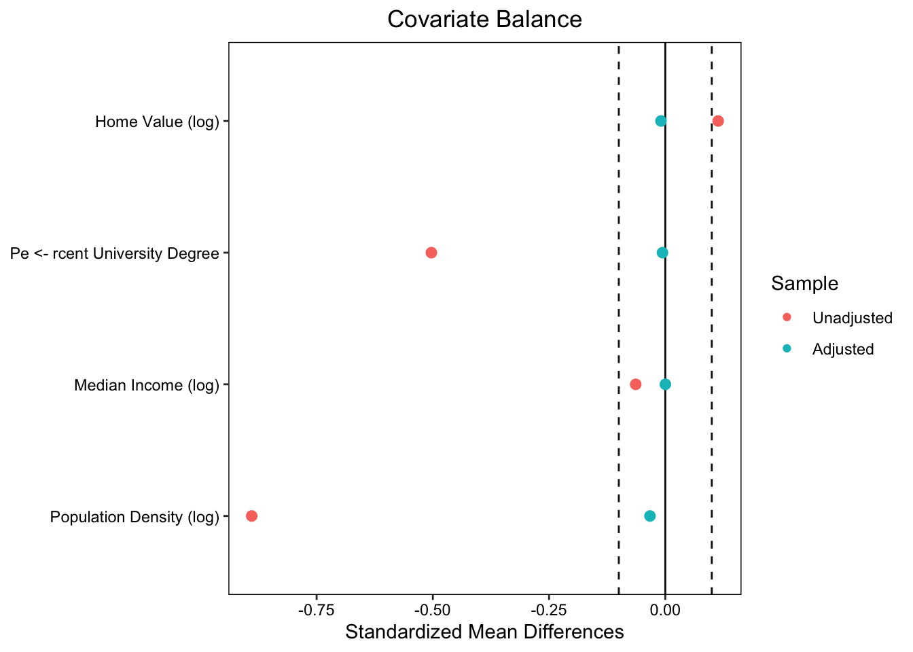
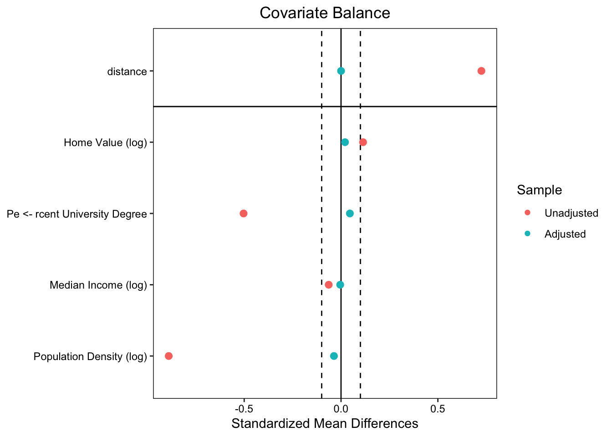

library(tidyverse)
library(here)
library(janitor)
library(jtools)
library(gtsummary)
library(gt)
library(MatchIt) # matching
library(cobalt) # balance + love plots
library(fixest) # fast fixed effects
library(scales) # plotting🌬️🗳 Assignment 2: Wind Turbines, Matching, and Difference-in-Differences
Replicate causal inference identification strategies in Stokes (2015)
Assignment instructions
Working with classmates to troubleshoot code and concepts is encouraged. If you collaborate, list collaborators at the top of your submission.
All written responses must be written independently (in your own words).
Keep your work readable: Use clear headings and label plot elements thoughtfully.
Assignment submission: Megan Hessel
Introduction
In this assignment I will be doing political weather forecasting except the “storms” I care about are electoral swings that might follow local wind turbine development.
In Stokes (2015), the idea is that a policy with diffuse benefits (cleaner electricity) can create concentrated local costs (turbines nearby), and those local opponents may “send a signal” at the ballot box (i.e., NIMBYISM). Your job is to use two statistical tools:
- Matching: Can we create a more apples-to-apples comparison between precincts that did vs. did not end up near turbine proposals?
- Fixed effects + Difference-in-Differences: Can we use repeated elections to estimate how within-precinct changes in turbine exposure relate to changes in incumbent vote share?
This repo is replicating the matching and fixed effects analyses from study:
Stokes (2015): “Electoral Backlash against Climate Policy: A Natural Experiment on Retrospective Voting and Local Resistance to Public Policy.
- Study: Stokes (2015) - Article
- Data source: Dataverse-Stokes2015
Setup: Load libraries
- Load libraries (+ install if needed)
Part 1: Study Background
1A. Dive into the details of the study design and evaluation plan
Goal: Get familiar with the study setting, environmental issue, and policy under evaluation.
1A.Q1 Summarize the environmental policy issue, the outcome of interest, and the intervention being evaluated. Be sure to include a brief description of each of the following key elements of the study: unit of analysis, outcome, treatment, comparison group):
The centrist Liberal Party created a “feed-in tariff” (FIT) policy in the early 2000s to phase-out coal by subsidizing new, low-carbon technologies (ie wind). In 2009, a law passed that removed local veto power in renewable energy placement. The “not in my backyard” (NIMBY) thought process may have caused local voting to push the Liberal Party out of the government in the 2011 election. This, this study investigates if proximity to wind energy (intervention/treatment) impacted voting behaviors (outcome) with fixed effects estimators and instrumental variable estimators. To do this, Stokes studied the electoral precincts (average ~350 voters each) within the 26 districts.
Treatment: precincts that had a proposed or operational wind turbine within its boundaries
Control: precincts without wind turbines
Outcome: Liberal Party vote in provincial elections (2003, 2007, 2011)
1A.Q2 Why might turbine proposals be correlated with baseline political preferences or rural areas? Provide 2 plausible mechanisms, and explain why that creates confounding.
Wind turbines need open, unobstructive land to be effective. Therefore, wind turbine ideal placement is in rural areas. However, the baseline political preferences in rural communities tends to be more conservative, who would vote against the Liberal Party pre and post the FIT policy (the intervention). Studying the change in voting behavior in these communities is faulty and confounded since the people dealing with the treatment (wind turbines) have a continual pre-existing preferences against the treatment.
Before 2009 (when the law to remove local veto power), poorer communities most likely disproportional faced the burden of renewable energy construction. Wealthier, more urban communities have a greater ability to resist and/or block turbine proposals due to more money, power, time, and easier communication. Thus, wind turbine placement could be disproportionally placed in poorer communities which would already a pre-existing baseline political preferences.
These confounding variables impact the outcome, creating a fundamental problem in the study as treatment assignment is not randomized.
1B. Break down the causal inference strategy and identify threats to identification:
1B.Q1 What is the key identifying assumption for a fixed effects / Difference-in-Difference design? Explain how this assumption when satisfied provides evidence of causal effect:
Assumption: Parallel trends! Prior to the intervention, the treatment and control group must have similar trends in the voting behavior.
If the 2 groups are similar in there voting behaviors pre-intervention, it is save to assume the treatment group’s counter factual would follow the control group trends. Parallel trends create a realistic counter factual we can use to understand intervention effects.
1B.Q2 What is the reason for using a fixed effects approach from a causal inference perspective? Summarize within the context of study (in your own words).
- From a causal inference perspective, fix effects remove omitted variable bias from time-invariant factors and remove between group variation. The fixed effect approach controls for any pre-exiting political or rural baseline beliefs, studing the change in voting shares within the precincts after intervention.
1B.Q3 What part of the SUTVA assumption is most likely violated in the context of this study design (and why)?
- SUTVA has 2 main assumptions: no interference and consistency. No interference means each treatment effect in one precincts would not effect the other. However, political voting behavior typically has active engagement within and between communities. Stokes discuss the protests and campaign events against the Liberal Party. Therefore, one community beliefs can easily effect and empower other precincts outcomes. SUTVA’s consistency assumption means each treatment must be administered consistently to all treatment groups. Yet, treatment groups can have variable proposed or operational wind turbines due to differences in space. Hence, both SUTVA assumptions are violated.
1B.Q4 Why does spillover matter when estimating an unbiased treatment effect?
- In a perfect world, control and treatment groups would be un-affected by each other. However, this rarely is possible. Because of communication and interactions between communities, precincts actions can impact each other. This interaction and influence cause bias in treatment effect because it creates new confounding variables that effect outcomes in both groups.
1B.Q5 How do the authors assess the risk of spillovers, and what analytic choice do they make to attempt to mitigate the risk that spillover biases the causal estimate?
- In this study, spillover is due to the enormous wind turbines that can be seen in neighboring communities. To reduce the spillover treatment bias, Stoke studied voting behaviors in relation to distance from the turbines, creating 6km buffers that excludes these communities from the control group.
Part 2: Matching
We will start by evaluating the 2007 survey (cross-sectional) data. Treatment is defined by whether a precinct is near a turbine proposal (within 3 km).
Goal: Match precincts using pre-treatment covariates and then estimate the effect of proposed wind turbines on incumbent vote share.
2A. Load data for matching
- Read in data file
stokes15_survey2007.csv - Code
precinct_idanddistrict_idas factors - Take a look at the data
# Load in data
match_data <- read_csv(here::here("data", "stokes15_survey2007.csv"))
# Change cols to factors
match_data$precinct_id <- as.factor(match_data$precinct_id)
match_data$district_id <- as.factor(match_data$district_id)
# Look at the data
head(match_data)# A tibble: 6 × 16
precinct_id district_id change_liberal proposed_turbine_3km log_wind_power
<fct> <fct> <dbl> <dbl> <dbl>
1 10.001.10.1. 10 0.0846 0 6.65
2 10.002.10.1. 10 0.132 0 6.30
3 10.003.10.2. 10 0.182 0 6.31
4 10.004.10.1. 10 0.154 0 6.65
5 10.005.10.3. 10 0.0588 0 6.10
6 10.006.10.2. 10 0.134 0 6.65
# ℹ 11 more variables: log_home_val_07 <dbl>, p_uni_degree <dbl>,
# log_median_inc <dbl>, log_pop_denc <dbl>, mindistlake <dbl>,
# mindistlake_sq <dbl>, longitude <dbl>, long_sq <dbl>, latitude <dbl>,
# lat_sq <dbl>, long_lat <dbl>2A.Q1 Intuition check: Why match? Explain rationale for using this method.
- Due to confounding variables, there is pre-existing differences in the groups. Matching chooses communities that are similar, so treatment and control groups are homogeneous. This reduces the bias between the treatment and control groups.
2B. Check imbalance (before matching)
- Create a covariate balance table comparing treated and control precincts
- Treatment indicator:
proposed_turbine_3km - Include pre-treatment covariates:
log_home_val_07,p_uni_degree,log_median_inc,log_pop_denc - Use the
tbl_summary()function from the{gtsummary}package.
match_data %>%
select( # select column we want to compare
log_home_val_07, p_uni_degree, log_median_inc, log_pop_denc, proposed_turbine_3km
) %>%
tbl_summary ( # Create balance table
by = proposed_turbine_3km,
statistic = list(
all_continuous() ~ "{mean} ({sd})",
all_categorical() ~ "{n} ({p}%)"
)) %>% # modify headers
modify_header(label ~ "**Covariate**") %>%
modify_spanning_header(c("stat_1", "stat_2") ~ "**Group**")| Covariate |
Group
|
|
|---|---|---|
| 0 N = 5,6191 |
1 N = 3541 |
|
| log_home_val_07 | 12.26 (0.37) | 12.29 (0.29) |
| p_uni_degree | 0.17 (0.12) | 0.13 (0.09) |
| log_median_inc | 10.32 (0.22) | 10.31 (0.19) |
| log_pop_denc | 5.12 (2.40) | 3.54 (1.78) |
| 1 Mean (SD) | ||
2B.Q1 Summarize the table output: Which covariates look balanced/imbalanced?
- All covariates look pretty balanced. The covariate with the largest difference between control and treatment is the
log_pop_denc. Butlog_pop_dencalso has a large standard deviation, so there is not much of an imbalance.
2B.Q2 Describe in your own words why these covariates might be expected to confound the treatment estimate:
- These covariates relate to economic status and home location (rural vs urban) which are all confounding variables (discussed in 1A.Q2) possibly impacting the communities voting behavior.
2B.Q3 Intuition check: What type of data do you need to conduct a matching analysis?
- Panel data is necessary when conducting matching analysis. Panel data is when observations are repeated in various clusters/groups/levels.
Conduct matching estimation using the {MatchIt} package:
Learning goals:
- Approximate the Mahalanobis matching method used in Stokes (2015)
- Implement another common matching approach called
propensity score matching
2C. Mahalanobis nearest-neighbor matching
- Conduct Mahalanobis matching
- Use nearest-neighbor match without replacement using Mahalanobis distance
- Use 1-to-1 matching (match one control unit to each treatment unit)
- Extract the matched data using
match.data()
set.seed(2412026)
match_model <- matchit(
# Treatment_indicator ~ Pre_treatment_covariates
proposed_turbine_3km ~ log_home_val_07 + p_uni_degree + log_median_inc + log_pop_denc,
data = match_data,
method = "nearest", # Nearest neighbor matching
distance = "mahalanobis", # Mahalanobis distance
ratio = 1, # Match one control unit to one treatment unit (1:1 matching)
replace = FALSE # Control observations are not replaced
)
# Extract matched data
matched_data <- match.data(match_model)summary(match_model)
Call:
matchit(formula = proposed_turbine_3km ~ log_home_val_07 + p_uni_degree +
log_median_inc + log_pop_denc, data = match_data, method = "nearest",
distance = "mahalanobis", replace = FALSE, ratio = 1)
Summary of Balance for All Data:
Means Treated Means Control Std. Mean Diff. Var. Ratio
log_home_val_07 12.2948 12.2620 0.1138 0.5941
p_uni_degree 0.1257 0.1688 -0.5032 0.4916
log_median_inc 10.3096 10.3219 -0.0636 0.7581
log_pop_denc 3.5398 5.1192 -0.8897 0.5474
eCDF Mean eCDF Max
log_home_val_07 0.0382 0.0881
p_uni_degree 0.1032 0.1769
log_median_inc 0.0355 0.0750
log_pop_denc 0.2099 0.3713
Summary of Balance for Matched Data:
Means Treated Means Control Std. Mean Diff. Var. Ratio
log_home_val_07 12.2948 12.2975 -0.0093 1.0063
p_uni_degree 0.1257 0.1262 -0.0060 1.0485
log_median_inc 10.3096 10.3096 0.0002 1.0403
log_pop_denc 3.5398 3.5982 -0.0329 0.9784
eCDF Mean eCDF Max Std. Pair Dist.
log_home_val_07 0.0075 0.0282 0.1334
p_uni_degree 0.0088 0.0367 0.1642
log_median_inc 0.0073 0.0395 0.1225
log_pop_denc 0.0109 0.0508 0.1485
Sample Sizes:
Control Treated
All 5619 354
Matched 354 354
Unmatched 5265 0
Discarded 0 02C.Q1 Using the summary() output: Which covariate had the largest and smallest Std. Mean Diff. before matching. Next, compare largest/smallest Std. Mean Diff. after matching.
Before matching,
log_pop_dencovariate had the largestStd. Mean Diffandlog_median_inccovariate had the smallest.After matching,
log_pop_dencovariate had the largestStd. Mean Diffandlog_median_inccovariate had the smallest.
2D. Create a “love plot” using love.plot() ❤️
- Plot mean differences for data before & after matching across all pre-treatment covariates
- This is an effective way to evaluate how effective matching was at achieving balance.
- Make a love plot of standardized mean differences (SMDs) before vs after matching.
- Include a threshold line at 0.1.
- In love plot display
mean.diffs
new_names <- data.frame(
old = c("log_home_val_07", "p_uni_degree", "log_median_inc", "log_pop_denc"),
new = c("Home Value (log)", "Pe <- rcent University Degree",
"Median Income (log)", "Population Density (log)"))
# Love plot
love.plot(match_model, stats = "mean.diffs",
thresholds = c(m = 0.1),
var.names = new_names)
2D.Q1 Interpret the love plot in your own words:
- Love plots visualize standardized mean differences (before and after matching). This love plot shows population density and percent university degree was imbalanced between groups before matching. After matching, all confounding variables are similar between groups, reducing bias.
Propensity score matching
2E. Propensity Score Matching (PSM)
- Estimate 1:1 nearest-neighbor Propensity Score Matching
- Same code as above except change
distance = "logit"
set.seed(2412026)
propensity_scores <- matchit(
# Treatment_indicator ~ Pre_treatment_covariates
proposed_turbine_3km ~ log_home_val_07 + p_uni_degree + log_median_inc + log_pop_denc,
data = match_data,
method = "nearest", # Nearest neighbor matching
distance = "logit", # Propensity Score Matching (PSM)
ratio = 1, # Match one control unit to one treatment unit (1:1 matching)
replace = FALSE # Control observations are not replaced
)Create table displaying covariate balance using cobalt::bal.tab()
Use bal.tab() to report balance before and after matching.
# reporting balance from propensity_scores
bal.tab(propensity_scores,
var.names = new_names)Balance Measures
Type Diff.Adj
distance Distance 0.0001
log_home_val_07 Contin. 0.0205
p_uni_degree Contin. 0.0457
log_median_inc Contin. -0.0042
log_pop_denc Contin. -0.0365
Sample sizes
Control Treated
All 5619 354
Matched 354 354
Unmatched 5265 0# Looking at propensity_scores love plot
love.plot(propensity_scores, stats = "mean.diffs",
thresholds = c(m = 0.1),
var.names = new_names)
2E.Q1 Compare Mahalanobis vs propensity score matching. Which method did a better job at achieving balance?
- When comparing Mahalanobis vs propensity score
Std. Mean Diff., Mahalanobis did a better job of achieving balance.
2F. Estimate an effect in the matched sample
Using the matched data (Mahalanobis method), estimate the effect of treatment on the change in incumbent vote share (change_liberal).
# Regression: vote shares based on turbine proximity
reg_match <- lm(
change_liberal ~ proposed_turbine_3km,
data = matched_data
)
summ(reg_match, model.fit = FALSE)| Observations | 708 |
| Dependent variable | change_liberal |
| Type | OLS linear regression |
| Est. | S.E. | t val. | p | |
|---|---|---|---|---|
| (Intercept) | -0.07 | 0.01 | -10.96 | 0.00 |
| proposed_turbine_3km | -0.06 | 0.01 | -7.25 | 0.00 |
| Standard errors: OLS |
Coefficient Interpretations
- Without treatment, Liberal Party voting share is expected to average about -0.07. With treatment (proximity to wind turbines), there is an expected 0.06 decrease in Liberal Party voting shares. Standard deviation is small, and there is statistical significance in this prediction.
2F.Q1 Have you identified a causal estimate using this approach: Why or why not?
- No. Matching only balances the observed covariates (home value, education, income, population density). While this improves balance and variable independence, matching does not address unobserved confounders that impact turbine placement and voting changes.
2F.Q2 When using a matching method, what is the main threat to causal identification?
- Matching method assume there is no other systematic differences between treated and control groups other than the chosen matched variables. Unobserved variables are unaccounted for and can create bias in the outcomes, threatening causal identification reliability.
2F.Q3 Describe why the treatment estimate represents the Average Treatment for the Treated (ATT) and explain why this is the case relative to estimation of the Average Treatment Effect (ATE).
- In this study, we matched by finding one similar control unit for each treated unit. Therefore, while all treated units are included, only some of the control units were included in the
match_model. ATT focuses on the average effect of the treated based on those who received treatment. Because the model includes all treatment groups, the estimatations represent the ATT. On the other hand, ATE measures the average effect of a treatment across the entire population. Because the model does not include the entire population,match_modeldoes not estimate the ATE.
Part 3: Panel Data, Fixed Effects, and Difference-in-Difference
Data source: Dataverse-Stokes2015
3A: Read in the panel data + code variables precinct_id and year as factors
# Read in data
panel_data <- read_csv(here::here("data", "Stokes15_panel_data.csv"))
# HINT: Try running `tabyl(panel_data$year)`. Review article to make sense of the row numbers (n).
tabyl(panel_data$year) panel_data$year n percent
2003 6186 0.3333333
2007 6186 0.3333333
2011 6186 0.3333333# Year and precinct_id as factor
panel_data$year <- as.factor(panel_data$year)
panel_data$precinct_id <- as.factor(panel_data$precinct_id)3A.Q1: Why are there 18,558 rows in panel_data?
There are a total of 6186 precincts that have repeating measurementss (voting shares) for 3 different years (2003, 2007, 2011).
6186 * 3 = 18,558
# How many years are included in the panel? - 3 years: 2003, 2007, 2011
unique(panel_data$year)[1] 2003 2007 2011
Levels: 2003 2007 2011# How many precincts are there? - 6186
str(panel_data)spc_tbl_ [18,558 × 14] (S3: spec_tbl_df/tbl_df/tbl/data.frame)
$ precinct_id : Factor w/ 6186 levels "10.001.10.1.",..: 1 1 1 2 2 2 3 3 3 4 ...
$ year : Factor w/ 3 levels "2003","2007",..: 1 2 3 1 2 3 1 2 3 1 ...
$ perc_lib : num [1:18558] 0.434 0.216 0.301 0.434 0.169 ...
$ proposed_turbine : num [1:18558] 0 0 0 0 0 0 0 0 0 0 ...
$ operational_turbine: num [1:18558] 0 0 0 0 0 0 0 0 0 0 ...
$ log_pop : num [1:18558] 5.81 3.91 3.86 5.2 2.15 ...
$ log_pop_denc : num [1:18558] -1.473 -1.278 -1.793 -2.082 0.199 ...
$ log_median_inc : num [1:18558] 9.96 9.75 10.29 9.96 9.7 ...
$ log_home_val : num [1:18558] 11.8 12.3 12.8 11.9 12.3 ...
$ avg_home_val : num [1:18558] 135101 215331 359354 142830 215782 ...
$ unemploy_rate : num [1:18558] 5.26 11.21 12.8 5.86 14.31 ...
$ p_uni_degree : num [1:18558] 0.251 0.196 0.192 0.266 0.176 ...
$ p_immigrant : num [1:18558] 0.153 0.117 0.129 0.168 0.079 ...
$ p_housing_own : num [1:18558] 0.665 0.933 0.941 0.667 0.918 ...
- attr(*, "spec")=
.. cols(
.. precinct_id = col_character(),
.. year = col_double(),
.. perc_lib = col_double(),
.. proposed_turbine = col_double(),
.. operational_turbine = col_double(),
.. log_pop = col_double(),
.. log_pop_denc = col_double(),
.. log_median_inc = col_double(),
.. log_home_val = col_double(),
.. avg_home_val = col_double(),
.. unemploy_rate = col_double(),
.. p_uni_degree = col_double(),
.. p_immigrant = col_double(),
.. p_housing_own = col_double()
.. )
- attr(*, "problems")=<externalptr> 3A.Q2: How many unique precincts are ever treated (i.e., proposed & operational)?
- Of the treatment precincts, 184 had proposed turbines and 52 had operational turbines.
panel_data %>%
group_by(precinct_id) %>% # Grouping for each precincts
summarise( # seperating prosposed vs operational turbines
ever_proposed = any(proposed_turbine == 1, na.rm = TRUE),
ever_operational = any(operational_turbine == 1, na.rm = TRUE),
.groups = "drop") %>%
summarise( # Total count
n_ever_proposed = sum(ever_proposed),
n_ever_operational = sum(ever_operational))# A tibble: 1 × 2
n_ever_proposed n_ever_operational
<int> <int>
1 184 523B. Plot and evaluate parallel trends: Replicate Figure.2 (Stokes, 2015)
- Create indicators for whether each precinct is ever treated by 2011 (
treat_p,treat_o; separate indicator for proposals and operational turbines). - Plot mean incumbent vote share by year for treated vs control precincts (with 95% CIs).
- Facet by turbine type (proposed & operational)
Step 1: Prepare data
# Indicators: control vs treatment group (treatment: `treat_o` vs `treat_p`)
trends_data <- panel_data %>%
group_by(precinct_id) %>% # group by precinct
mutate(
treat_p = as.integer(any(proposed_turbine == 1, na.rm = TRUE)), # ever proposed (in any year)
treat_o = as.integer(any(operational_turbine == 1, na.rm = TRUE))) %>% # ever operational (in any year)
ungroup() %>%
pivot_longer(c(treat_p, treat_o), # new col `turbine_type` - with treat_p and treat_o
names_to = "turbine_type", values_to = "treat") %>%
mutate( # Make `turbine_type` a factor
turbine_type = factor(turbine_type,
levels = c("treat_p", "treat_o"),
labels = c("Proposed turbines", "Operational turbines")),
status = if_else(treat == 1, "Treated", "Control"), # control and treatment col
year = factor(year)) # Making sure year is a factor Step 2: Create trends plot
pd <- position_dodge(width = 0.15)
trends_data %>%
group_by(turbine_type, status, year) %>% # Grouping Group (T vs C), year, and Treatment type (operational vs proposed)
summarise(
mean = mean(perc_lib, na.rm = TRUE), # mean of voting share
n = sum(!is.na(perc_lib)), # count
se = sd(perc_lib, na.rm = TRUE) / sqrt(n), # Standard error
ci = qt(.975, df = pmax(n - 1, 1)) * se, # Confidence intervals
.groups = "drop") %>%
ggplot(aes(year, mean, color = status, group = status)) + # PLOT!
geom_line(position = pd, linewidth = 1.2) + # line plot with points
geom_point(position = pd, size = 2.6) +
geom_errorbar( # CI
aes(ymin = mean - ci, ymax = mean + ci),
position = pd, width = .12, linewidth = .7, color = "black") +
facet_wrap(~ turbine_type, nrow = 1) + # 2 plots - opertaional vs proposed turbines
scale_color_manual(values = c(Control = "#0072B2", Treated = "#B22222")) +
scale_y_continuous(labels = percent_format(accuracy = 1)) +
coord_cartesian(ylim = c(.20, .57)) +
labs(
title = "Figure 2. Trends in the Governing Party’s Vote Share",
x = "Election Year",
y = "Liberal Party Vote Share",
color = NULL) +
theme_minimal(base_size = 14) +
theme(
panel.grid.minor = element_blank(),
legend.position = "bottom",
strip.text = element_text(face = "bold"))
3B.Q1: Write a short paragraph assessing the parallel trends assumption for each outcome.
Background: In this study, pre-treatment is considered the 2003 voting shares. In 2006, the FIT policy was initated on a small scale. Therefore, early turbines proposals and operations began in 2007. In 2009, the law that refused communities to reject renewable energy started. Full effects of the 2009 Green Energy Act were seen in 2011.
The graph above shows parallel trends between treatment and control groups in 2003 and 2007 (the baseline and early stages of the intervention). Treatment effect is exemplified in the treatment groups change of Liberal Party voting shares in 2011. Thus, the parallel trend assumption is met, but should be considered with caution due to the limited pre-treatment measurements. One pre-treatment measurement and one early-intervention stage measurement, its not enough observations to be super confident on meeting the parallel trends assumption.
Estimating Fixed Effects Models (DiD) for proposals
\[ \text{Y}_{it} = \alpha_0 + \beta \cdot (\text{proposed_turbine}_{it}) + \gamma_i + \delta_t + \varepsilon_{it} \]
- \(Y_{it}\) is the vote share for the Liberal Party in precinct i in time t
- \(\beta\) is the treatment effect of a turbine being proposed within a precinct
- \(\gamma_i\) is the precinct fixed effect
- \(\delta_t\) is the year fixed effect
Example 1: Randomly sample 40 precincts
- To illustrate the “dummy variable method” of estimating fixed effects using the the general
lm()function we are going to randomly sample 40 precincts (20 “treated” precincts with proposed turbines). - If we attempted to use this approach with the full sample estimating all 6185 (n-1) precinct-level coefficients is impractical (it would take a long time).
set.seed(40002026)
# Dataframe of just precinct_id and if have proposed_turbine
precinct_frame <- panel_data %>%
group_by(precinct_id) %>%
summarise( # where proposed_turbine = 1 => TRUE --> convert results to an integers (0,1)
proposed_turbine_any = as.integer(any(proposed_turbine == 1, na.rm = TRUE)),
.groups = "drop"
)
# Randomly selecting 20 precinct_ids
ids_40 <- precinct_frame %>%
group_by(proposed_turbine_any) %>%
slice_sample(n = 20) %>%
ungroup() %>%
select(precinct_id)
# Get the panel_data for the randomly selected rows
sample_40_precincts <- panel_data %>%
semi_join(ids_40, by = "precinct_id") # semi_join: return all rows from x with a match in y.3C: Estimate a fixed effects model using lm() with fixed effects added for precinct and year using the sample of 40 precincts just created.
# lm model with precinct and year as fixed
model1_ff <- lm(
perc_lib ~ proposed_turbine + precinct_id + year,
data = sample_40_precincts
)
summ(model1_ff, model.fit = FALSE, digits = 3)| Observations | 120 |
| Dependent variable | perc_lib |
| Type | OLS linear regression |
| Est. | S.E. | t val. | p | |
|---|---|---|---|---|
| (Intercept) | 0.275 | 0.050 | 5.460 | 0.000 |
| proposed_turbine | -0.057 | 0.031 | -1.858 | 0.067 |
| precinct_id10.115s.10.84. | 0.166 | 0.069 | 2.402 | 0.019 |
| precinct_id105.038.105.45. | 0.053 | 0.069 | 0.765 | 0.447 |
| precinct_id14.149.14.79. | 0.208 | 0.070 | 2.976 | 0.004 |
| precinct_id14.168.14.82. | 0.192 | 0.070 | 2.749 | 0.007 |
| precinct_id18.003.18.1. | 0.121 | 0.070 | 1.738 | 0.086 |
| precinct_id18.033.18.19. | -0.002 | 0.072 | -0.034 | 0.973 |
| precinct_id21.126.21.179. | 0.204 | 0.069 | 2.950 | 0.004 |
| precinct_id22.061.22.60. | 0.213 | 0.070 | 3.047 | 0.003 |
| precinct_id22.124.22.52. | 0.156 | 0.070 | 2.230 | 0.029 |
| precinct_id22.137.22.193. | 0.179 | 0.069 | 2.590 | 0.011 |
| precinct_id22.158.22.203. | 0.165 | 0.070 | 2.357 | 0.021 |
| precinct_id22.209.22.172. | 0.188 | 0.070 | 2.699 | 0.009 |
| precinct_id28.056.28.149. | -0.011 | 0.070 | -0.160 | 0.873 |
| precinct_id28.072.28.98. | 0.097 | 0.069 | 1.409 | 0.163 |
| precinct_id28.139.28.145. | 0.040 | 0.072 | 0.553 | 0.582 |
| precinct_id28.163.28.69. | 0.124 | 0.069 | 1.802 | 0.075 |
| precinct_id29.241.29.172. | 0.067 | 0.070 | 0.958 | 0.341 |
| precinct_id34.050.34.39. | 0.342 | 0.069 | 4.947 | 0.000 |
| precinct_id34.151.34.125. | 0.098 | 0.070 | 1.399 | 0.166 |
| precinct_id36.133.36.92. | 0.358 | 0.069 | 5.179 | 0.000 |
| precinct_id40.044.40.68. | 0.236 | 0.072 | 3.275 | 0.002 |
| precinct_id40.098.40.120. | 0.195 | 0.070 | 2.792 | 0.007 |
| precinct_id40.134.40.174. | 0.216 | 0.069 | 3.127 | 0.002 |
| precinct_id40.243.40.22. | 0.325 | 0.070 | 4.651 | 0.000 |
| precinct_id40.244.40.46. | 0.178 | 0.070 | 2.543 | 0.013 |
| precinct_id55.228.55.180. | 0.130 | 0.069 | 1.883 | 0.064 |
| precinct_id58.162.58.98. | 0.278 | 0.069 | 4.024 | 0.000 |
| precinct_id58.232.58.231. | 0.203 | 0.069 | 2.940 | 0.004 |
| precinct_id67.141.67.123. | 0.022 | 0.070 | 0.311 | 0.757 |
| precinct_id69.073.69.35. | 0.070 | 0.069 | 1.015 | 0.313 |
| precinct_id70.081.70.44. | 0.062 | 0.069 | 0.899 | 0.372 |
| precinct_id70.135.70.105. | 0.441 | 0.069 | 6.388 | 0.000 |
| precinct_id70.221.70.155. | 0.247 | 0.069 | 3.576 | 0.001 |
| precinct_id73.248.73.180. | 0.187 | 0.070 | 2.672 | 0.009 |
| precinct_id73.251.73.180. | 0.204 | 0.070 | 2.927 | 0.005 |
| precinct_id87.017.87.58. | 0.127 | 0.069 | 1.836 | 0.070 |
| precinct_id87.053.87.68. | 0.214 | 0.069 | 3.100 | 0.003 |
| precinct_id87.213.87.24. | 0.033 | 0.070 | 0.469 | 0.641 |
| precinct_id98.009.98.12. | 0.129 | 0.069 | 1.868 | 0.066 |
| year2007 | -0.045 | 0.019 | -2.364 | 0.021 |
| year2011 | -0.131 | 0.024 | -5.381 | 0.000 |
| Standard errors: OLS |
summ(model1_ff, model.fit = FALSE, digits = 3, robust = TRUE)| Observations | 120 |
| Dependent variable | perc_lib |
| Type | OLS linear regression |
| Est. | S.E. | t val. | p | |
|---|---|---|---|---|
| (Intercept) | 0.275 | 0.085 | 3.247 | 0.002 |
| proposed_turbine | -0.057 | 0.039 | -1.465 | 0.147 |
| precinct_id10.115s.10.84. | 0.166 | 0.101 | 1.646 | 0.104 |
| precinct_id105.038.105.45. | 0.053 | 0.104 | 0.509 | 0.612 |
| precinct_id14.149.14.79. | 0.208 | 0.094 | 2.201 | 0.031 |
| precinct_id14.168.14.82. | 0.192 | 0.110 | 1.751 | 0.084 |
| precinct_id18.003.18.1. | 0.121 | 0.107 | 1.132 | 0.261 |
| precinct_id18.033.18.19. | -0.002 | 0.101 | -0.024 | 0.981 |
| precinct_id21.126.21.179. | 0.204 | 0.157 | 1.299 | 0.198 |
| precinct_id22.061.22.60. | 0.213 | 0.105 | 2.023 | 0.047 |
| precinct_id22.124.22.52. | 0.156 | 0.103 | 1.509 | 0.135 |
| precinct_id22.137.22.193. | 0.179 | 0.104 | 1.721 | 0.089 |
| precinct_id22.158.22.203. | 0.165 | 0.088 | 1.879 | 0.064 |
| precinct_id22.209.22.172. | 0.188 | 0.106 | 1.770 | 0.081 |
| precinct_id28.056.28.149. | -0.011 | 0.112 | -0.099 | 0.921 |
| precinct_id28.072.28.98. | 0.097 | 0.104 | 0.934 | 0.353 |
| precinct_id28.139.28.145. | 0.040 | 0.111 | 0.359 | 0.721 |
| precinct_id28.163.28.69. | 0.124 | 0.106 | 1.179 | 0.242 |
| precinct_id29.241.29.172. | 0.067 | 0.089 | 0.749 | 0.456 |
| precinct_id34.050.34.39. | 0.342 | 0.089 | 3.821 | 0.000 |
| precinct_id34.151.34.125. | 0.098 | 0.093 | 1.050 | 0.297 |
| precinct_id36.133.36.92. | 0.358 | 0.091 | 3.941 | 0.000 |
| precinct_id40.044.40.68. | 0.236 | 0.096 | 2.457 | 0.016 |
| precinct_id40.098.40.120. | 0.195 | 0.092 | 2.123 | 0.037 |
| precinct_id40.134.40.174. | 0.216 | 0.090 | 2.399 | 0.019 |
| precinct_id40.243.40.22. | 0.325 | 0.098 | 3.314 | 0.001 |
| precinct_id40.244.40.46. | 0.178 | 0.095 | 1.873 | 0.065 |
| precinct_id55.228.55.180. | 0.130 | 0.092 | 1.406 | 0.164 |
| precinct_id58.162.58.98. | 0.278 | 0.097 | 2.867 | 0.005 |
| precinct_id58.232.58.231. | 0.203 | 0.092 | 2.203 | 0.031 |
| precinct_id67.141.67.123. | 0.022 | 0.115 | 0.189 | 0.850 |
| precinct_id69.073.69.35. | 0.070 | 0.104 | 0.677 | 0.500 |
| precinct_id70.081.70.44. | 0.062 | 0.095 | 0.655 | 0.514 |
| precinct_id70.135.70.105. | 0.441 | 0.128 | 3.451 | 0.001 |
| precinct_id70.221.70.155. | 0.247 | 0.111 | 2.217 | 0.030 |
| precinct_id73.248.73.180. | 0.187 | 0.108 | 1.720 | 0.089 |
| precinct_id73.251.73.180. | 0.204 | 0.102 | 1.995 | 0.050 |
| precinct_id87.017.87.58. | 0.127 | 0.112 | 1.135 | 0.260 |
| precinct_id87.053.87.68. | 0.214 | 0.150 | 1.428 | 0.157 |
| precinct_id87.213.87.24. | 0.033 | 0.087 | 0.375 | 0.709 |
| precinct_id98.009.98.12. | 0.129 | 0.107 | 1.210 | 0.230 |
| year2007 | -0.045 | 0.024 | -1.876 | 0.064 |
| year2011 | -0.131 | 0.036 | -3.686 | 0.000 |
| Standard errors: Robust, type = HC3 |
3C.Q1: Intuition check: Is the signal-to-noise ratio for the treatment estimate greater than 2-to-1?
For the treatment estimate, the signal-to-noise ratio is less than the 2-to-1 threshold. The treatment effect is marginally significant (p = 0.067) and the estimate is twice as large as its standard error. Meaning there is signal but it is noisy with moderate uncertainty.
|estimate| / standard error = |-0.057| / 0.031 = 1.83871
HINT: Add the argument
digits = 3to thesumm()function above
3C.Q2: Re-run the summ() function using the heteroscedasticiy robust standard error adjustment (robust = TRUE). Did the standard error (S.E.) estimates change? Explain why.
The standard error increases (0.031 –> 0.039) and the p-value increases (0.067 –> 0.147). With the heteroscedasticiy robust standard error adjustment, the treatment effect has greater variance and is non-significant.
The OLS standard error assumes homoscedasticity, where the variance of errors is constant across all observations. When relaxing that assumption with
robust = TRUE, the variance can differ across observations. For instance, Liberal vote share can now vary between treated vs. control precincts, different precincts over time, and different election years.The OLS did not account for heteroscedasticity which led to overconfident inference.
3C.Q3: Compare results of the model above to the findings from the fixed effects analysis in the Stokes (2015) study. Why might the results be similar or different?
- Both the model above and Stokes (2015) study show a decline in Liberal voting shares in relation to proposed turbine implementation in precincts. However, the model above has larger uncertainty and no statistical significance. The models main difference is the sample size. Stokes model includes 18,558 observations (6,186 precincts for 3 years), whereas my model only includes 120 observations (40 precincts for 3 years ). While the model above is consistent with the patterns in Stokes model, the small sample decreases the model’s statistical power and increases uncertainty.
3C.Q4: In your own words, explain why it is advantageous from a causal inference perspective to include year and precinct fixed effects. Explain how between-level and within-level variance is relevant to the problem of omitted variable bias (OVB).
- Adding precinct as a fixed effect controls for all the possible time-invariant confounding differences between precincts, such as demographic, geographic, and pre-existing beliefs. Adding year as a fix effect controls for differences/trends that happened between 2003, 2007, and 2011 that effected all precincts equally. Adding fixed effects that help control between-level variance (differences across precincts) and within-level variance (changes within the same precinct over time) allow for unobserved and observed differences in the parameters to be “differenced out”, reducing OVB.